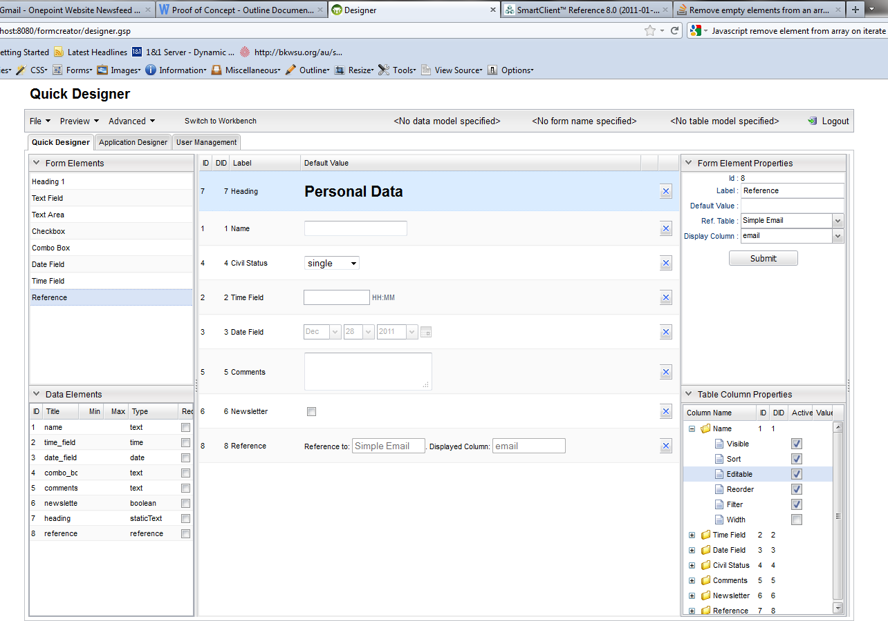
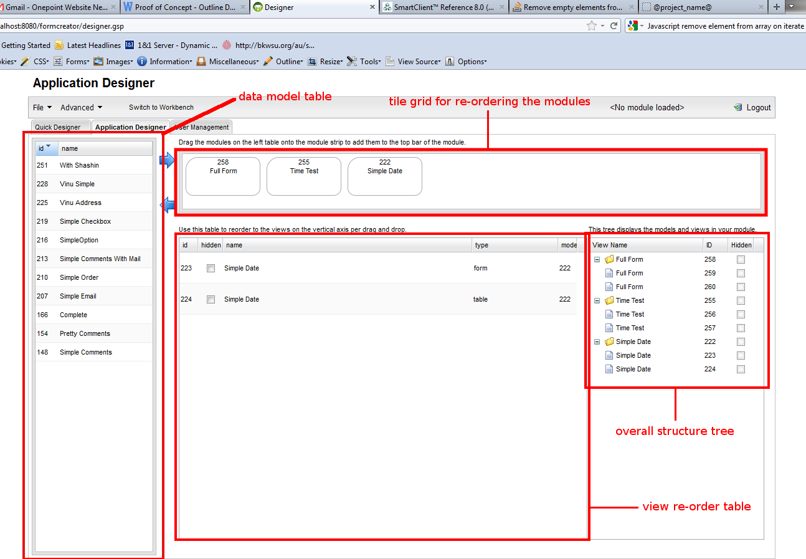
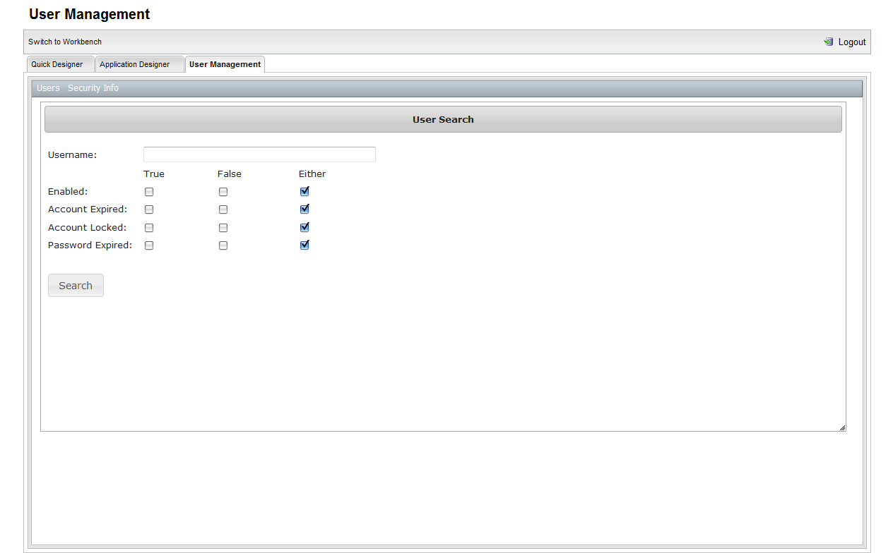
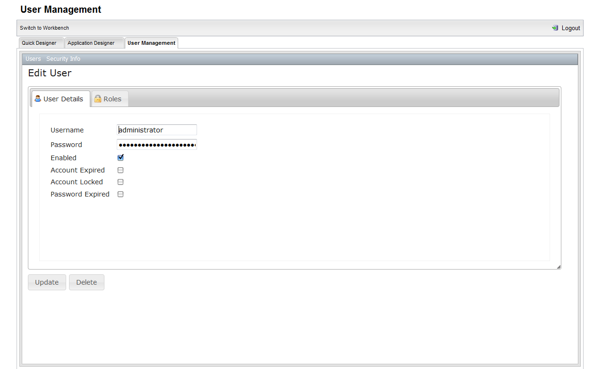
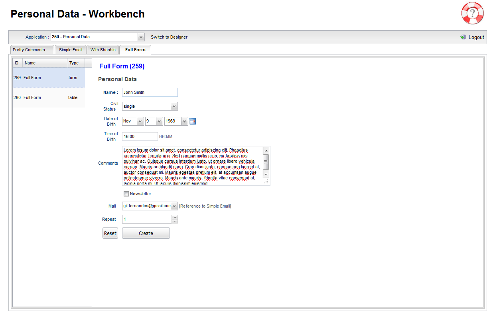
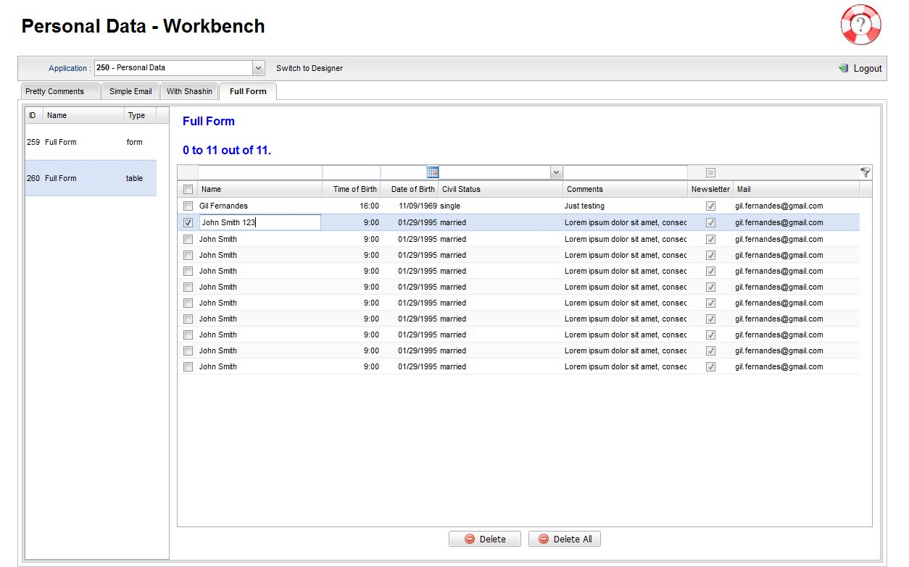

Table of Contents
1 Introduction
1.1 What is @project_name@?
@project_name@ is a web based tool with which you can create your own online databases. This tool contains two main components:- designer - component with which you can create your database model, form, table views and your applications.
- workbench - component with which you can perform CRUD operations on the applications you have defined.
1.1.1. Designer
The designer has two main design modules and an optional user management module:- The Quick Designer - which you can use to create using drag and drop your datamodels, forms and table views.
It contains the following sub-components:
- a form widget table
- a data model property table
- a central form design section
- a form widget properties editor and a table view tree editor.

- The Application Designer - which you can use to create bundles of modules (i.e. a data module with specific views) using drag and drop.
The Application Designer contains the following sub-components:
- a datamodel table
- a tile grid for re-ordering the modules
- view re-order table (a table which can be used to re-order the views vertically)
- overall structure tree (a tree which displays the overall structure of your application)

- User Management Module - this module is only accessible to system administrators and allows to view, add, modify user attributes and roles and delete users.
This module contains a search form for users and forms for editing the user properties and roles. This GUI is heavily based on the
Grails Spring UI plugin.
Here are screenshots of the Application Designer:


1.1.2. Workbench
The workbench allows users to perform CRUD (Create, Read, Update, Delete) operations on the defined data models using the created views. The user can switch between different applications and inside of each application the user can switch between the data models.Currently only two types of views are visible on the data models:
- Form Views - with which the user can create new records

- Table Views - with which the user can view (includes filtering), update and delete records.

1.1.3. User Roles
There are currently two roles on the system:- Administrator - users with this role can create, change and delete views and applications of all users
- User - users with this role can create, change and delete views and applications only their own applications
1.1.4. Persistence
We are using at present a relational (Postgres) and a NoSQL (MongoDB 2.0.2) database for storing the data. Event though we are using Postgres, MySQL or any other relational database can be used.
One of the ideas of the project was to code the data storage part against a simple persistence interface which could be implemented on the basis of any relational or NoSQL database. I.e. MongoDB can be replaced in the future by another implementation of the same persistence interface.
These are the responsibilities of the two DB's store in the project:
- Relational Database (Postgres 8) - all designer related elements are stored here. This includes data models, form, table views and applications.
- MongoDB 2.0.2 - stores the actual data contained in the applications. I.e. all workbench related elements are stored here.
1.1.5. Server Client Communication
This project relies heavily on Ajax. I.e. as soon as the designer or the workbench are loaded all interactions between the web browser and the server side are done via Ajax. JSON is the preferred data exchange format.
1.1.6. Web Frameworks
This project is using Grails 2.0.0 as its server side framework. On the client side the GUI is rendered using the Javascript library SmartClient 8.1.